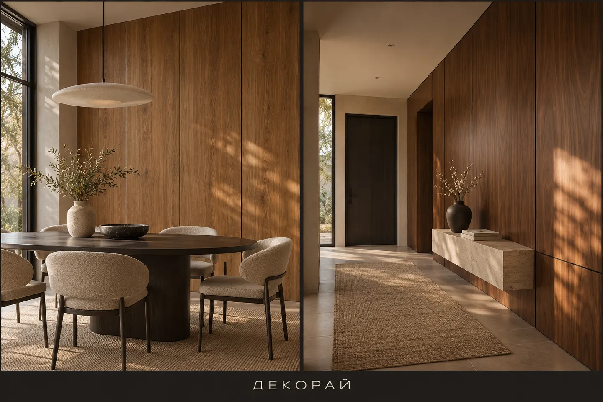

Идеи оформления стен в интерьере
Иллюстрация интерьерного применения древесной фактуры ДЕКОРАЙ и ссылка на реальные материалы коллекции.
Смотреть древесные фактуры
Древесная фактура в акцентной зоне
Вертикальный рисунок выделяет стену и может связать её с деревянной мебелью или напольным покрытием. Посмотрите, как соседние тёмные и светлые поверхности меняют восприятие фактуры.
От идеи к подборке материала
Выберите образец в коллекции и сравните цвет в шоуруме. Измерьте стену, проверьте размеры выбранного изделия и обсудите раскладку с менеджером.
Что проверить на своём объекте
Примерьте образец к полу и мебели, снимите фото при дневном и вечернем освещении и отметьте на плане, где заканчивается рисунок. Для реализованного проекта полезно записать точный артикул и сохранить фотографии монтажа и готовой стены.